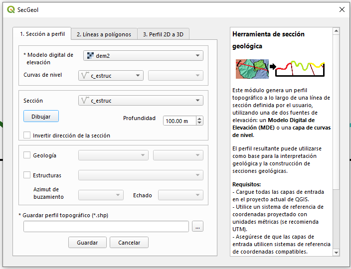
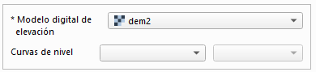
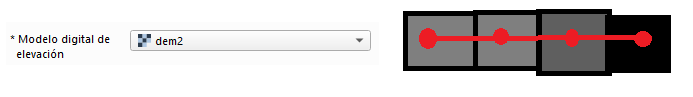
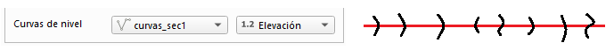
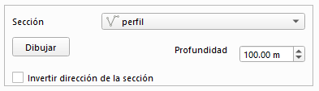
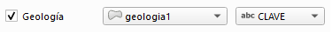
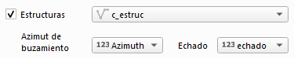

Fase 1. Vista general de la herramienta

Selección de la fuente de elevación

La fuente de elevación es uno de los elementos principales de esta fase, ya que proporciona los valores de elevación (Z) utilizados para construir el perfil topográfico. Asimismo, su sistema de referencia espacial se utiliza como referencia para las salidas generadas por SecGeol.
SecGeol admite dos tipos de fuentes de elevación:
Modelo Digital de Elevación (MDE)
Corresponde a una capa ráster en la que cada píxel contiene un valor de elevación. El MDE debe cubrir el área atravesada por la línea de sección.
El tamaño de píxel determina el espaciamiento utilizado para muestrear el perfil topográfico. Por lo tanto, un MDE con menor tamaño de píxel permite representar con mayor detalle las variaciones del relieve.

Curvas de nivel
Corresponden a una capa vectorial de líneas, en la que se deberá seleccionar el campo que contiene el valor de elevación. SecGeol obtiene los puntos del perfil a partir de las intersecciones entre la línea de sección y las curvas de nivel.
En este caso, el perfil se construye entre la primera y la última intersección con las curvas de nivel. Por esta razón, la extensión resultante del perfil puede ser menor que la longitud total de la línea de sección.

Línea de sección
La línea de sección define el trazado sobre el cual se construirá el perfil topográfico. SecGeol permite definirla de dos formas: mediante una línea existente en una capa vectorial o dibujándola directamente sobre la vista del mapa.
Para cada opción deben considerarse las siguientes condiciones.

Línea proveniente de una capa vectorial
Cuando se utiliza una línea existente en una capa vectorial, deben considerarse las siguientes condiciones:
- La sección debe estar definida por una sola entidad. Si la capa contiene varias líneas, SecGeol permite seleccionar la que se utilizará para generar el perfil.
- Si la línea no tiene definido un sistema de referencia espacial y se encuentra sobre la fuente de elevación, SecGeol le asignará el sistema de referencia espacial de dicha fuente.
- La línea puede contener más de dos vértices y, por lo tanto, presentar cambios de dirección en su trazado.
- La geometría de la línea no puede ser multiparte. Una geometría multiparte contiene dos o más trazados separados que pertenecen a una misma entidad.
Línea dibujada por el usuario
Cuando la línea de sección se dibuja directamente en SecGeol, deben considerarse las siguientes condiciones:
- El modo de dibujo se activa mediante el botón Dibujar. Con la fuente de elevación previamente cargada, haga clic sobre la vista del mapa para definir los vértices de la sección y finalice el trazado con clic derecho.
- La línea adoptará el sistema de referencia espacial de la fuente de elevación utilizada.
- La línea puede contener más de dos vértices, por lo que puede presentar cambios de dirección en su trazado.
Profundidad de la sección
La profundidad predeterminada es de 100 m y puede modificarse de acuerdo con las necesidades de la sección. El usuario debe introducir únicamente la magnitud de la profundidad, sin signo negativo.
La profundidad se calcula a partir de la elevación mínima encontrada a lo largo del perfil y se extiende hacia abajo desde ese valor.
Geología
De manera opcional, puede incorporarse una capa de geología para proporcionar información de referencia durante la interpretación del perfil. Esta información debe corresponder a una capa vectorial de geometría poligonal.

SecGeol identifica los polígonos geológicos que intersectan la línea de sección y traslada esta información al perfil topográfico. Al seleccionar la capa geológica, deberá indicarse el campo de atributos que contiene la información que se desea representar en el perfil, por ejemplo, la unidad litológica.
De esta manera, la distribución de las unidades geológicas observadas en superficie sirve como referencia para apoyar la interpretación geológica hacia el subsuelo.
Estructuras
De manera opcional, también puede incorporarse una capa vectorial de líneas que represente estructuras geológicas, como fallas o fracturas. Las estructuras que intersectan la línea de sección pueden proyectarse sobre el perfil para apoyar la interpretación geológica en profundidad.

Para realizar esta proyección, la tabla de atributos de la capa estructural debe contener dos campos con la información de orientación:
- Azimut de buzamiento: indica la dirección hacia la cual buza la estructura y debe encontrarse en el intervalo de 0° a 360°.
- Echado: indica el ángulo de inclinación de la estructura y debe encontrarse en el intervalo de 0° a 90°.
Perfil de salida
SecGeol genera un perfil topográfico que constituye la base para realizar la interpretación geológica. Este perfil representa la elevación sobre el eje Y y la distancia recorrida a lo largo de la línea de sección sobre el eje X.
Para realizar la interpretación deben considerarse las siguientes recomendaciones:
- El perfil conserva las elevaciones (Z) de la superficie sobre el eje Y y las distancias reales recorridas a lo largo de la línea de sección sobre el eje X.
- No debe modificarse la geometría del perfil topográfico. Los vértices que representan el relieve no deben moverse, eliminarse ni editarse, ya que constituyen la referencia geométrica de la sección. Esta restricción aplica únicamente al perfil topográfico; las líneas utilizadas para la interpretación geológica y las estructuras proyectadas sí pueden editarse.
- La línea del perfil topográfico conserva como atributo la información geológica obtenida de los polígonos que intersectaron la línea de sección. Se recomienda simbolizar el perfil utilizando este campo, ya que permite visualizar la distribución de las unidades geológicas observadas en superficie y utilizarlas como referencia durante la interpretación.
- El perfil también contiene las estructuras geológicas proyectadas de acuerdo con sus valores de azimut de buzamiento y echado. Estas líneas pueden conservarse en la posición generada por SecGeol o modificarse durante la interpretación, de acuerdo con el criterio del usuario.
- Sobre el perfil pueden agregarse y editarse líneas para realizar la interpretación geológica. El proceso puede entenderse como bosquejar la geometría del subsuelo sobre el perfil utilizando entidades lineales.
- Al construir la interpretación, procure que las líneas se prolonguen ligeramente más allá de sus intersecciones con otras líneas. No es necesario eliminar los pequeños segmentos excedentes, ya que estos serán resueltos durante la generación de los polígonos en la siguiente fase.
- Una vez concluida la interpretación y revisadas las intersecciones entre las líneas, continúe con la Fase 2. Líneas a polígonos.